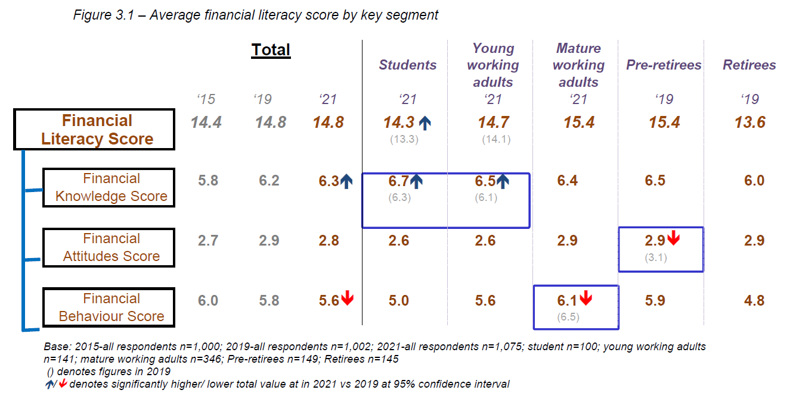
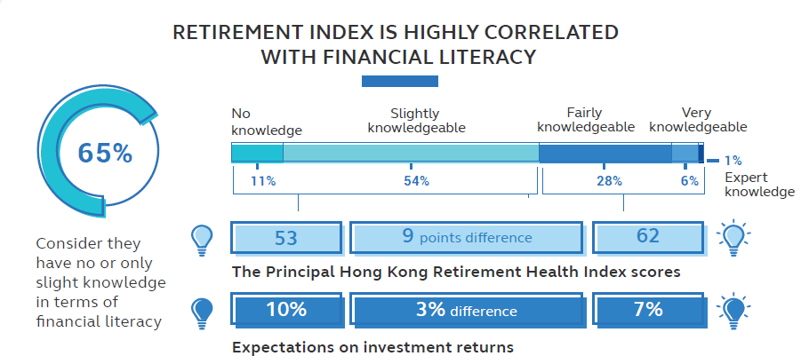
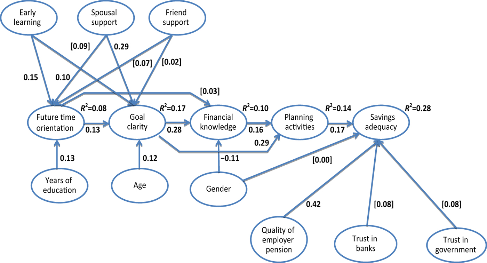
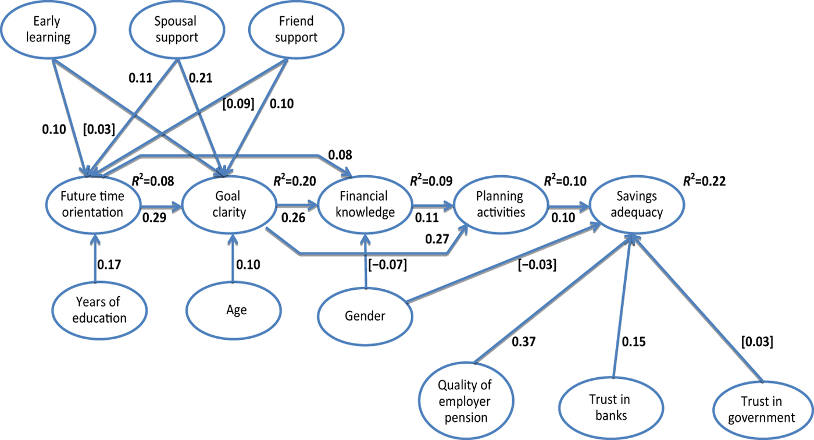
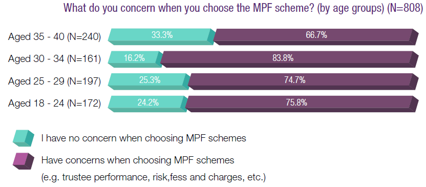
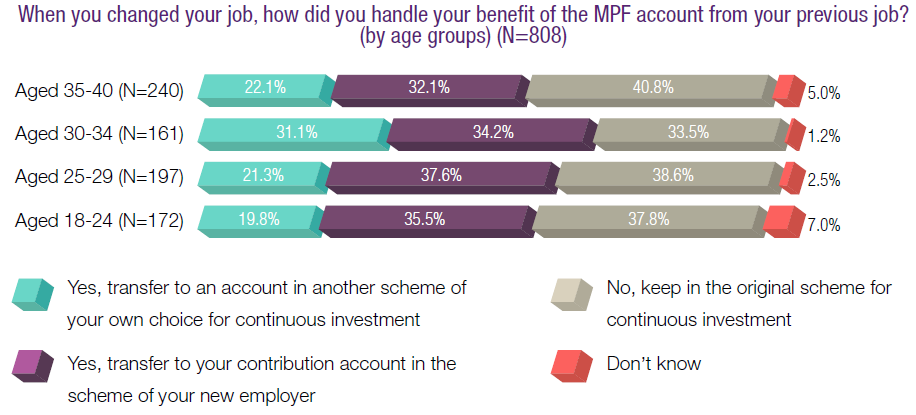

Back to Content page
Financial Literacy and Retirement Preparedness
Financial Literacy in HK (IFEC report in 2021) 1
Individual's financial literacy is often evaluated by asking three questions about fundamental financial knowledge (compound interest, inflation, and risk diversification). IFEC report uses a more comprehensive approach suggested by OECD covering attitude and behaviour as well.

Financial knowledge
- Better understanding of basic financial concepts such as compounding effect and risk diversification especially among the younger segment (Students scored this highest, followed by Young working adults).
- Majority consider their financial knowledge level at average; slightly more confidence among the Mature working adults and Pre-Retirees.
- Financial knowledge score of self-rated high group is not much higher than self-rated average group.
- More divergence was found in inflation concept, compound interest and risk diversification.
Financial attitude
- Planning
- 25% of surveyed respondents have adopted a "live for today and let tomorrow take care of itself" attitude and found it less gratifying to save money for the long term.
- Learning
- Working adults active in their careers are particularly engaged in proactively seeking information about money management; retirees are least interested in financial learning (41% totally not interested).
Financial behavior
- Day-to-day financial management
- The proportion of retirees who agreed that they keep a close eye on their financial affairs, keep money for bills, and make plans for income and spending is significantly less than mature working adults and pre-retirees.
- Saving
- Less than half (47%) reported having set and acted towards long-term goals, down from 54% in 2019 (more so among mature adults aged over 30).
- More active saving behavior among young people, likely spurred on by more stay-at-home and prevalence of digital trading apps (young working adults: 28% in 2023, compared to 15% in 2019; students: 18% in 2023, compared to 2% in 2019).
- None in the younger segments and a small proportion (16%) of mature working adults have their primary saving goal on retirement preparation; buying property seemed to be a more pressing issue.
- The HKCSS survey reveals that "saving for a rainy day" is the primary reason for developing saving habits, while making ends meet is the main reason for not having a saving habit.
- Holding financial products
- Insurance products were not common among retirees (43%, compared to 83% of pre-retirees); only 4% hold annuities.
- Young working adults tend to rely more on MPF savings compared to mature working adults to support retirement.
- Saving life insurance as a source of retirement funding is more common among mature working adults.
- Retirement confidence
- Retirement confidence of mature working adults dropped during the pandemic, probably due to a decrease in income and pressure on taking care of parents and children.
Principal Retirement Health Index Report 2021 2

- Respondents with higher financial literacy tend to have higher score on retirement health and more realistic expectation on investment return.
- 72% of respondents have no clear idea on how to use their MPF after retirement → low goal clarity.
- 39% expect to buy post-retirement annuity product.
- Median amount of financial assets (excluding property) is less than half of the expected nest egg size required while 49% think they are well prepared financially for retirement → overconfidence.
Relationship between Financial Literacy and Retirement Preparation
Financial knowledge and saving adequacy (interdisciplinary financial planning model) - HK 3
The same study had been done in the US and Netherlands4 5, results are similar while the association between factors are generally stronger.
Factors in the middle of the graph are psychological effects, those on the top and bottom are social and institutional effects.
Path analysis model for aged 25-44 respondents

Path analysis model for aged 45-64 respondents

Purchase intentions of retirement financial products - HK 6
- Financial literacy was significantly correlated with retirement goal clarity (r = 0.52), attitudes towards retirement (r = 0.33), and the purchase intention of four financial products (r = [0.30, 0.43]).
- Another paper7 also stated that the effect of financial literacy on the probability of holding a private insurance policy for long-term care is large and significant.
- Retirement goal clarity explained the effects of financial literacy on intentions to purchase other saving products in the commercial market.
- The elevated levels of retirement goal clarity may have led to higher purchase intentions of saving products in the commercial market, as it may allow better and more suitable appreciation of appropriate financial products catered to achieve their goals.
Overview of financial literacy around the world 8
Key observations (in general, with exceptions):
- Answering one additional financial question correctly is associated with a 3-4 percentage point higher probability of planning for retirement in countries as diverse as Germany, the USA, Japan, and Sweden (same pattern observed in other countries but the degree of association varies).
- Even after accounting for factors such as education, marital status, number of children, retirement status, race, and sex, similar result is still obtained. The research also pointed out that lack of planning is tantamount to lack of saving. 9
- Where people score well on mathematics and science tests, they also tend to score well on questions measuring numeracy (i.e. compound interest)
- People are more knowledgeable about inflation if their country has experienced it recently.
- People are more knowledgeable about risk diversification if the country has experienced pension privatization.
- Women (across nations, education, income level) are less likely to answer correctly and also more likely to indicate that they "do not know" the answer which may result from lack of confidence in financial knowledge rather than lack of actual knowledge. 10
- Study shows that financial literacy is associated with pension participation.11 However, in Japan, women are more likely to engage with retirement planning than men despite their lower level of financial knowledge.
- Higher educational attainment is strongly correlated with financial knowledge, but even at the highest level of schooling, financial literacy tends to be low.
- Age, income, socio-economic status, engagement in workforce, ethnicity, religious beliefs, sibilings' financial conditions (worse → more literate), experience of large wealth losses are also factors affecting financial literacy in some countries.
**Interesting point mentioned in the paper**
Consider the following 2 questions:
- Buying a company stock usually provides a safer return than a stock mutual fund. True or false?
- Buying a stock mutual fund usually provides a safer return than a company stock. True or false?
The answers do appear sensitive to how the question is worded in both the US American Life Panel and the Dutch DNB Household Survey (DHS). Fewer people answer correctly with (b) and correct responses double with (a). Acquiescence bias - tendency to give the 'expected' response instead of true preference when answering questions that reflect on personality and behaviour - could be a possible explanation.
Biased financial literacy perception & retirement planning behaviour 12 13
Mismatches between actual and self-assessed financial knowledge was observed in many countries including Australia, US, UK, Germany and China. It is suggested that consumer overconfidence regarding their financial knowledge may be a deterrent to seeking out professional advice, thus widening the 'knowledge gap'.
The study in China states that respondents who are over (under) confidence in their financial knowledge have a higher (lower) propensity to plan and take actual actions for retirement. This echoes the result found in another paper where misinformed individuals are as responsive as the well-informed to perceived pension information even though their behaviour would be based on incorrect information; uninformed individuals are simply unresponsive. 14
Longevity literacy & Financial literacy 15
- Longevity literacy is highly correlated with financial literacy, i.e., those with greater financial literacy more often demonstrate strong longevity knowledge.
- A greater tendency among individuals with strong longevity knowledge to be future-oriented and retirement-ready compared to those with poor longevity knowledge.
- The ultimate outcome being that those with high financial literacy tend to have a better financial experience in retirement i.e. easy to make ends meet, retirement lifestyle exceeds or meets pre-retirement expectations.
Retirement planning - UK & Japan 16 17
More than half of respondents from UK and Japan reported not understanding how much they needed to save (compared to 23% in HK), the survey suggested these reasons:
- varied retirement plans offered by employers, majority are invested in a default investment option → employees do not manage their own money
- different state pension benefits
- changes to retirement ages
- the vast choice of personal savings options
- lack of education and guidance
- young workers in Japan (and Canada) have significanly lower estimated contribution rates to state pension and earlier retirement age which is not realistic.
*Most of the studies only reveal correlation, causal relationship is still under-researched.
Financial Education
Situation in HK (HKCSS survey on 2015) 18
- One-third of respondents said they had received some financial education in school (higher proportion is observed in younger age group), mostly about daily expense management.
- Friends and colleagues is the most common source of acquiring financial knowledge after graduation, followed by traditional media; ~50% said they acquired knowledge about investment product and MPF portfolio.
- Majority of respondents don't have a habit of formulating budget.
- ~30% were not engage in investment, partly due to lack of knowledge.
- Aged 30-34 (they entered the job market when MPF was first implemented) shows a slightly different pattern:


Effectiveness of financial education
- Program embed follow-up or are continued over time, so as to help employees retain knowledge acquired via the program are found more effective.19
- Long-term financial education delivered to employees around the age of 40 will optimally enhance savings at retirement by close to 10%.
- Programs that provide one-time education can generate short-term but few long-term effects. Even participants expressed higher intent to change saving behaviour, the effect on actual actions is very limited. 20
- Low participation rates can be rational as improving financial literacy does not benefit everyone and acquiring knowledge is costly.
- The low-income and less-educated have less to gain from participating in such programs.
- Context effects in retirement preparation21: whether pension communication induces individuals to get involved and change their behavior strongly depends upon the presentation and wording of the message rather than its objective content (non-neutrality of language, e.g. gender marketing). 22 23
- Financial advisors (human-based is preferred by most) are viewed as the most important source of education and advice. 25
Appendix
HK Financial Competency (literacy) Framework
Key components:
- Attitudes: a person¡¦s thoughts, beliefs and feelings, and his or her tendencies towards certain kinds of behaviour.
- Motivations: incentives a person has to act in a certain way (or at least to develop an inclination for specific behaviour).
- Knowledge and skills: acquisition of fundamental concepts and practical skills that progress from easy to complex and from general to specific for present or future use.
- Money and Banking (MB) - nature of money and how the banking system works
- Income and Taxation (IT) - earning money and people¡¦s obligations to society
- Saving and Investing (SI) - creating wealth for financial goals
- Spending and Credit (SC) - using money that a person has or may need to borrow
- Consumer Rights and Responsibilities (CR) - consumer protection system and what constitutes a responsible consumer
- Financial Planning (FP) - planning for the future use of money
- Protection and Risk (PR) - managing possible financial losses
- Behaviour: ultimate outcome; it is the behaviour a person actively engages in, insofar as it directly impacts his or her financial well-being.
IOSCO/OECD Core Competency Framework on Financial Literacy for Investors
Content areas:
- Basic investing principles and concepts: the broad underlying principles of investing.
- Investment product attributes: key features such as product structure and fees as well as the potential risks of various investment products.
- Buying/selling process of investment products: the competencies applicable during the process of selecting investment products, financial service providers and platforms for buying and selling investment products.
- Owning investment holdings: the competencies applicable to monitoring and managing investments.
- Investor rights and responsibilities: investor rights and responsibilities and investor protection measures such as complaint and redress procedures.
- Behavioural biases related to investing: the emotional or cognitive biases that may affect investors when making investment decisions.
- Investment scams and frauds: the common features of investment scams and the ability to avoid being a victim of scams and frauds.
Dimensions to consider in each area:
- Awareness and knowledge: information acquired by a retail investor such as the fees, features and risks of common investment products.
- Skills and behaviours: actions, or the ability to act, in a manner that achieves positive outcomes, using the behaviours that would most likely lead to financial well-being e.g., evaluating the real return on investments before selecting an investment product.
- Attitudes, confidence and motivations: internal, psychological mechanisms that may hinder/support informed decision-making and financial well-being, e.g. retail investors¡¦ belief that the past performance of an investment is an indication of future returns.
Reference
1.
IFEC - Financial Literacy Monitor 2021 (Feburary 2022)
2.
Principal Hong Kong Retirement Health Index Report 2021
3.
Chou, K., Yu, K., Chan, W., Wu, A., Zhu, A., & Lou, V. (2015). Perceived retirement savings adequacy in Hong Kong: An interdisciplinary financial planning model. Ageing & Society, 35(8), 1565-1586. doi:10.1017/S0144686X14000373
4.
Hershey, D. A., Henkens, K. & Van Dalen, H. P. (2010). Aging and retirement planning: interdisciplinary influences viewed through a cross-cultural lens. International Journal of Aging and Human Development, 70(1), 1-38. doi:10.2190/AG.70.1.a
5.
Van Dalen, H. P., Henkens, K. and Hershey, D. A. (2010). Perceptions and expectations of pension savings adequacy: a comparative study of Dutch and American workers. Ageing & Society, 30(5), 731-754. doi:10.1017/S0144686X09990651
6. Yeung, D. Y., Ho, A. K.K., Lam, A. H. K., Lam, A. C. H. (2023). An integrated model on purchase intentions of typical and tax-deductible saving products: The roles of retirement goal clarity and age. Journal of Behavioural and Experimental Economics, 104, 101995. https://doi.org/10.1016/j.socec.2023.101995
7.
Gousia, K. (2016) Financial Literacy and Long-Term Care Insurance Coverage. University of Kent Working Paper. Canterbury, University of Kent.
8.
Lusardi, A., & Mitchell, O. (2011). Financial literacy around the world: An overview. Journal of Pension Economics & Finance, 10(4), 497-508. doi:10.1017/S1474747211000448
9.
Lusardi, A., & Mitchell, O. (2006). Financial Literacy and Planning: Implications for Retirement Wellbeing.
10.
Lusardi, A. (2012). Numeracy, financial literacy, and financial decision-making.
11.
IZA Institute of Labor Economics - Discussion Papers No.12187: Financial Literacy and Preparation for Retirement (Feburary 2019)
12.
Chen, B., & Chen, Z. (2023). Financial Literacy Confidence and Retirement Planning: Evidence from China. Risks, 11(2), 46. https://doi.org/10.3390/risks11020046
13.
Lusardi, A., & Mitchell, O. (2007). Financial Literacy and Retirement Preparedness: Evidence and Implications for Financial Education. Business Economics. 42. 35-44. 10.2145/20070104.
14.
Chan, S., & Stevens, A. H. (2003). What you don't know can't help you: Knowledge and retirement decision making.
15.
Financial literacy, longevity literacy, and retirement readiness: 2022 TIAA Institute-GFLEC Personal Finance Index
16.
Fidelity Global Retirement Survey Report - US, UK, HK, Japan, Germany (June 2020)
17. The survey estimate retirement income needs through age, marital status, gender, asset allocation, savings rate, accumulated savings, other income sources, retirement age, and life expectancy. By comparing this with the projected retirement saving balance and other income sources, the score represents the projected percentage of retirement expenses being meet.
18.
HKCSS - Executive Summary on Hong Kong Financial Education Landscape Research (January 2016)
19.
Lusardi, A., Michaud, P. C., & Mitchell, O. S. (2015). Using a Life Cycle Model to Evaluate Financial Literacy Program Effectiveness.
20.
Clark, R. L., & Ambrosio, M. B. (2017). Ignorance is not bliss: the importance of financial education.
21.
Prast, H., & van Soest, A. (2016). Financial Literacy and Preparation for Retirement. Intereconomics, 51(3), 113-118.
22.
Boggio, C., Fornero, E., Prast, H., & Sander, J. (2015). Seven Ways to Knit Your Portfolio: Is Investor Communication Neutral?
23.
Invesco - 2021 defined contribution language study
24. Blake, D. (2022). Nudges and Networks: How to Use Behavioural Economics to Improve the Life Cycle Savings-Consumption Balance. Journal of Risk and Financial Management, 15(5), 217.
https://doi.org/10.3390/jrfm15050217
25.
Goldman Sachs Asset Management - Retirement Survey & Insights Report 2022
Back to Top